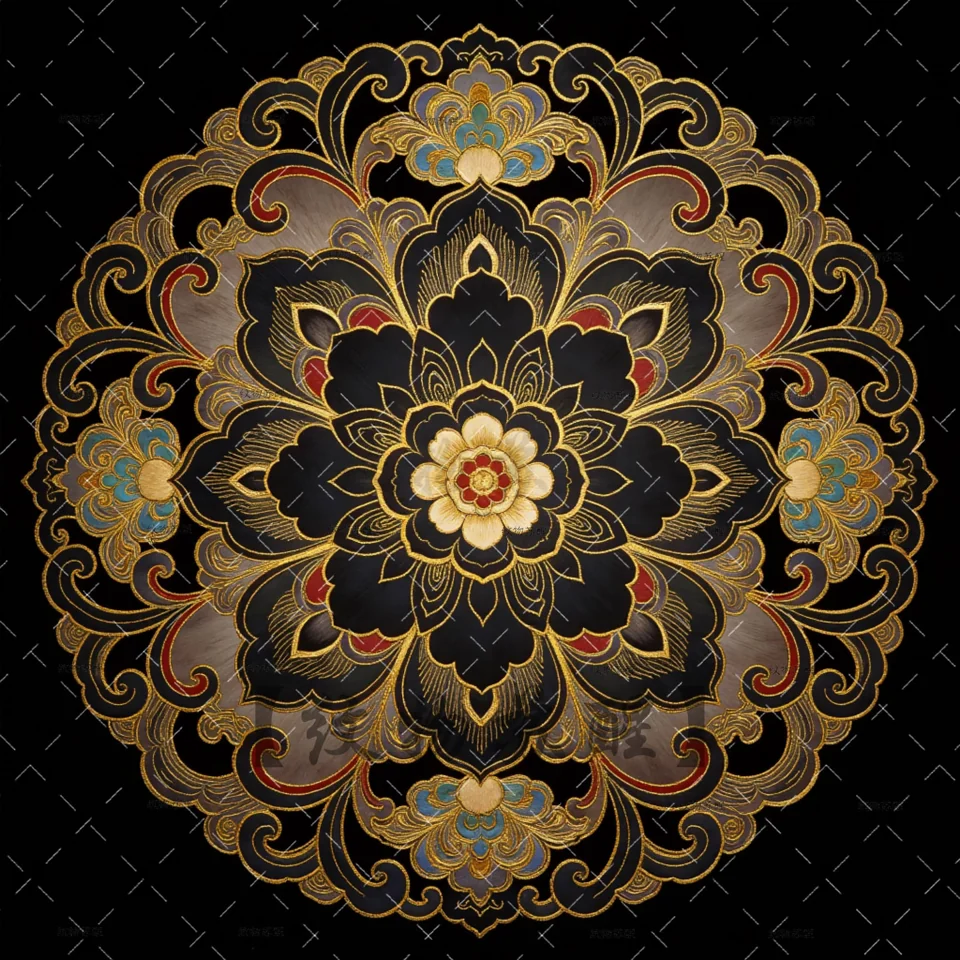
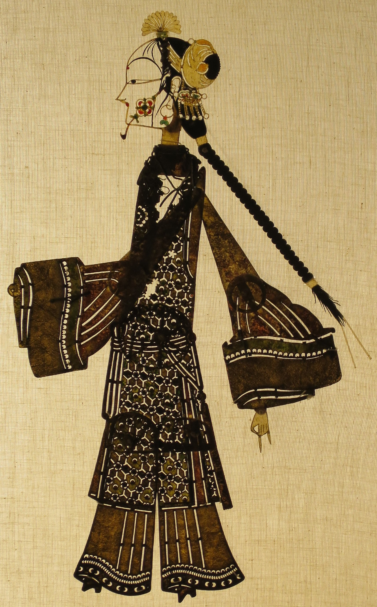

03六式华服
宫宴华仪
宫宴贵女
云想衣裳花想容，春风拂槛露华浓。
- 形制
- 纹色
- 风尚
锦成其形 · 舞成其势 · 色成其韵
向下滚动，观纹成锦

BROCADE OF THE GRAND TANG · 01—06
衣载盛世，锦见万方。以六式华服，照见唐锦在宫廷、丝路与日常风雅间的流转。
宫宴华仪
云想衣裳花想容，春风拂槛露华浓。
DANCE OF THE GREAT TANG
六幕乐声 · 一城长安
陕西皮影 · 光与影的民间戏台
以皮为形，以光为魂。
转一盏宫灯，让镂刻的衣纹与侧面的眉眼，在绢面后缓缓入戏。
陕西影人 / 十九世纪
侧面眉眼，一线传神；花饰与长辫刻出人物神采。细密的镂花借灯光透出，让皮革有了衣袖的轻盈。
女影人、官员影人：19 世纪陕西皮影，林柳新纪念偶戏博物馆，Hiart 摄。《唐明皇与杨贵妃》题材影人：里斯本东方博物馆，Daderot 摄。摄影均为 CC0。
传统影人实物 × 唐风宫灯的数字演绎。影人为后世作品，非唐代文物。了解中国传统皮影工艺 ↗
正在点亮宫灯…

向下滚动 · 转灯看影 / 亦可左右拖动
色谱 · 纸上观色
翻开七册，在纸页间读一抹古典颜色。
藏七色于卷，寄一愿于长安。
留下您的感想，与我们一起梦回大唐
盛唐流光 · 终章
愿此夜的光，越过千年，仍照见你心中的长安。
点击夜空任意一处 · 放飞一盏心愿灯